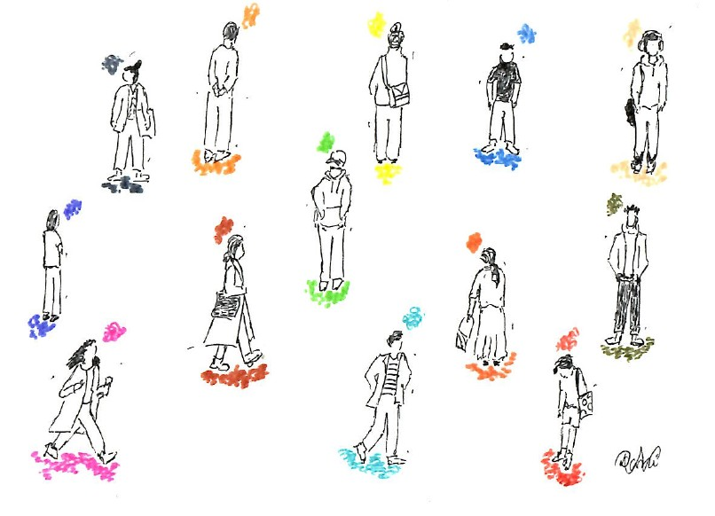

Formação clínica
Pós-Graduação em Psicoterapia Psicanalítica e Formação Avançada em Intervenção Psicoterapêutica no Luto.
Um espaço de escuta e reflexão onde pensamentos, emoções e experiências podem ganhar forma, significado e novas possibilidades.

A consulta é um espaço de escuta clínica, de orientação dinâmica, centrado na experiência singular de cada pessoa e na forma como a sua história se manifesta no presente.
Ao longo do processo, pensamentos, sentimentos, memórias, sonhos e relações podem ser explorados com liberdade, permitindo construir novos sentidos para aquilo que se vive.
A mudança desenvolve-se na relação terapêutica e ao ritmo de cada pessoa, num processo que procura favorecer maior compreensão de si e das suas formas de estar consigo e com os outros.

Sou Psicóloga Clínica, com formação em Psicologia Clínica e da Saúde pela Faculdade de Psicologia e de Ciências da Educação da Universidade do Porto. A minha prática tem sido aprofundada sobretudo no campo da psicoterapia psicanalítica e da intervenção psicoterapêutica no luto.
Cédula Profissional OPP n.º 29498Pós-Graduação em Psicoterapia Psicanalítica e Formação Avançada em Intervenção Psicoterapêutica no Luto.
Trabalho em consulta psicológica individual com jovens adultos e adultos, em contexto institucional e de clínica privada.
Ao percurso em consulta clínica juntam-se experiências em investigação aplicada, intervenção comunitária e formação na área da saúde mental, incluindo contextos como a Associação Inluto, o Centro Hospitalar Universitário de São João e a USF Valongo.
As consultas são realizadas mediante marcação prévia, presencialmente no Porto ou online. Para esclarecer disponibilidade ou colocar alguma questão, pode entrar em contacto por e-mail.